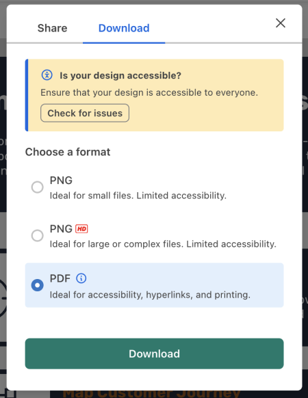

The context
Venngage is a graphic design tool that specializes in infographics
Many of Venngage’s core users use the tool to create documents like infographics, reports, presentations, and diagrams to aid communication at work. Some common use cases include onboarding documentation, job aids, and monthly reports.
Venngage was hearing more and more often from users within government, non-profit, and higher education organizations that they needed functionality that would allow them to create designs that were accessible to all--specifically, the ability to export accessible PDFs that are compliant with their local laws.
In this case study when I mention accessible design, I’m referring to the accessibility of these digital documents — page layouts with text and visuals — not web design.
Understanding the problem and the audience
Users don’t have the tools or know-how to make their designs accessible
I had seen some requests for accessibility features from our customers over the years, so to kick off the project, I reached out to these customers to learn about their workflows and needs around accessible design.
I was especially interested in responses to the following:
- Who in your organization is responsible for ensuring designs are compliant?
- Walk me through the last time you produced an accessible design.
- How familiar are you with accessibility guidelines and laws?
- How confident are you in the accessibility of the designs you’re producing today? Why do you say that?
- Why is it important to you or your organization that your designs are accessible? How important is it?
Competitive landscape
While I was getting up to speed on web and document accessibility and continuing outreach to users and accessibility experts, I took a look at the existing products in the space. Some key takeaways:
- None of Venngage's direct competitors (players in the consumer, non-expert graphic design space) offered even the most basic accessibility features, like contrast checkers or the ability to specific alt text for visuals. Exported designs were not accessible to users of assistive technologies like screen readers
- Most accessibility experts used a combination of Adobe Acrobat and PDF Accessibility Checker (PAC) 2021 to remediate documents. These tools don’t cater to non-experts—they assume in-depth background knowledge on accessibility best practices and require some training to understand.
- PowerPoint offers a basic accessibility checker, but even when used by an expert, output designs would still require some remediation with a professional tool.
Key pain points
From this early discovery work, there were two clear pain points that we aimed to address:
Users aren’t familiar with all document accessibility requirements.
Some are familiar with concepts like contrast and alt text but most aren’t aware of more “behind-the-scenes” concepts like reading order or heading structure.
Users aren’t confident using existing tools to make their designs accessible.
Some are already using industry-standard tools like Adobe Acrobat to make their designs accessible, but aren’t confident in the accessibility of their output. These tools require training that many users don’t have access to.
The goal
Enable and support the creation of accessible designs
- Just as products like Venngage and Canva have democratized design, we want to democratize accessible design. Designs should be more accessible by default, and improving design accessibility shouldn’t require a ton of training.
- Users should be able to export PDFs tagged following the PDF/UA standard.
Mapping out flows and exploring high-level options
With clear goals and pain points in mind, I wanted to start by mapping out what the high-level flows could look like for a "complete" solution, from a user finding our accessible design maker from a search engine (most of our acquisition comes from organic traffic) to successfully exporting an accessible design.
This would help me identify dependencies for the project and launch as a whole, while helping me tease out major design decisions to be considered.
One of the fundamental decisions to be made was how the accessibility guidance and functionality would fit into the user's editing experience. There were two main opposing options:
- Integrate prompts and guidance at relevant points in the editing flow, to reduce the remediation that needed to be done once the design was finished
- Provide a flow after the design was completed to guide the user through remediation
I fleshed out these two options with low-fi pen-on-paper sketches to help surface obvious benefits and limitations of each approach, and used these sketches to get feedback from internal testers and a few users.
It was immediately clear that regardless of whether we included prompts throughout the editing process, users valued being able to see the full accessibility status of their designs in one place—it eased some of their uncertainty about whether they were doing things right.
Knowing this, it was prudent to lean on this option (a post-editing flow) to guide the user through the remediation process, because even if we later wanted to integrate prompts more seamlessly into the editing flow, this flow at the end of the editing process would still provide value.
With this learning, the competitive analysis, and initial user calls in mind, I defined the principles that would inform the overall design.
Design principles
- Surface all critical functionality in a single, cohesive flow. The experience should guide the user through the steps required to make their design accessible, and surface the necessary functionality directly in that flow.
- Provide education and guidance in context. Users shouldn’t need to go to third-party sources or do their own research to get their job done.
- Validity over ease of use (at least for a v1). For us to confidently market ourselves as a tool for making accessible designs, it was important to offer a comprehensive solution - one where it was possible to create a design that ticked all of the accessibility boxes, so to speak, right out of the box. A tool in which, if you followed all of the steps, meant you wouldn’t need to rely on another tool to do any clean-up at the end.
The solution
An accessibility checker flow that guides the user through the process of making a design accessible
- Users can create from a selection of accessible templates. These templates are designed with accessibility in mind - they use accessible colours, their reading order and heading structure are set, links and tables are appropriately tagged, and their visuals have alt text or are marked as decorative.
- On export, users are guided through the remediation process via an accessibility checker flow that provides the necessary education in context. Users don’t need to seek out external resources, or dig through different menus, to get their job done.
- Users can see the accessibility status of their design at a glance.The accessibility checker provides a clear list of accessibility considerations, and their statuses are clear up front.

A contrast checker in the color menu help users choose accessible colors as they edit.

Users are prompted to check for accessibility issues before they download.
Each checker item features key guidance, with links to comprehensive guides in our knowledge base.

Widget-specific information necessary for remediation is shown on canvas while each item is open in the accessibility checker. Users can interact directly with tags on canvas or indirectly via the checker.
Learnings & iterations
Throughout the design process we tested prototypes and tweaked the design to better meet user needs.
Two of the more significant changes we integrated into our second iteration were the following:
Clarified manual vs. automatic checks
In the first version, we kept the top-level UI accessibility checker simple, relying on alert and check icons to indicate whether an item needed the user’s attention, conscious of the potential to overwhelm the user by providing too much information up front.
Tests revealed that users found this discouraging, as they assumed the alert icon meant that the system had detected issues (when in reality, it could mean that an issue was detected or that the user had to review something manually).
To address this problem, added headers and tags to clarify the state of each item and what’s required of the user.
Replaced generic guidance with clear action items
In an early version of the checker we were overly cautious about missing or misrepresenting WCAG guidelines, resulting in items with lots of technical text. This alienated some users, who understood how to address the more familiar items, but often skipped over items where it wasn’t immediately clear what was required of them, because the descriptions were too exhaustive.
To address this problem, we simplified the guidance and provided clear action items where possible.
In the “Use of colour” item, for example, we integrated a black and white filter that allowed users to see whether their design relied on colour to communicate essential information, rather than asking them to interpret guidelines for avoiding the use of color.
The results
We’ve had very positive feedback from Venngage customers and accessibility experts, who appreciate the approach we’ve taken to integrate education directly into the accessibility checker.
✨ "We’ve been using and loving Venngage for a few years, but using this feature reinforces once again that we made the right choice to use it over other, similar products."
🙏 "Thank you for the accessibility features! This will make a big difference for my customers."
👏 "Absolutely delighted to see this progressive work happening! Not only will it help create inclusive design but will raise awareness for accessible communications, fonts, and compliance with AODA regulations! Well done, Venngage!"
We’ve released to existing customers and are working towards a full marketing launch at the end of this quarter, when we hope to gather engagement data to help us prioritize further improvements.
The next steps
Help more users create more accessible designs
While the current design works well for users who have already bought-in to the importance of accessibility, we’re setting our sights on making designs created by all users more accessible. We hope to normalize accessibility as a design consideration for everyone.
We’ve got a few ideas for how to achieve this, including:
- Integrating prompts and checks for key accessibility issues directly into the editing flow. For example, nudging the user to add alt text when they upload an image to their design
- Automating more of the process to reduce the manual work required by the user. For example, automatically generating alt text when a user uploads an image, or providing a “one-click” option to update the colors in a design to meet contrast requirements
- Adding features that provide user value unrelated to accessibility but that can improve design accessibility as a side-effect. For example, providing an easy way to apply a new color palette to designs. Users can try out new color schemes on their designs, and the colors apply in such a way that contrast requirements are met.